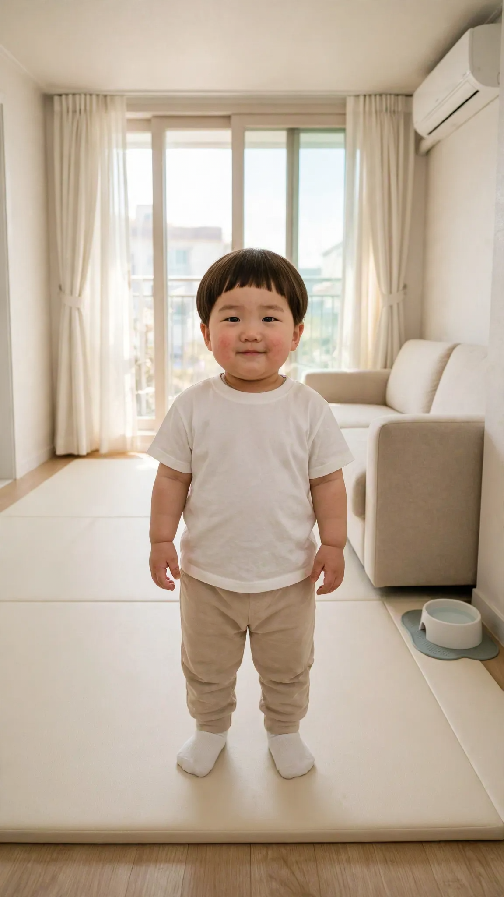

🎙 도윤 목소리 수집
이미지 1장 · 10초. 대사 옆 복사를 누르면 그 대사가 들어간 프롬프트 전체가 복사됩니다 — 그대로 붙여넣기


대사 60개
1우와, 이거 도유니 거야? 진짜 도유니 거야? 엄마 고마워!
2엄마, 도유니 배고파. 맘마 언제 머거? 빨리 먹고 싶어.
3콩이야, 이리 와! 도유니랑 같이 놀자. 공 던져 줄게.
4도유니가 혼자 했떠! 도유니 잘했지? 엄마 봐 봐.
5시러, 도유니 안 할래. 이거 안 할 거야. 진짜 시러.
6쉿, 콩이 자고 있떠. 우리 조용히 하자. 살금살금 가자.
7이거 모야? 엄마, 이거 이상하게 생겼다. 만져 봐도 돼?
8아빠, 비행기 태워 줘! 높이 높이 해 줘! 한 번 더!
9미안해, 도유니가 잘못했떠. 다시 안 할게. 용서해 줘.
10우리 엄마 최고야! 엄마 제일 조아! 아빠도 조아.
11도유니 졸려. 이제 코 자고 싶어. 엄마 옆에서 잘래.
12하나, 둘, 셋 출발! 도유니가 일등이야! 콩이는 이등.
13이모, 이거 도유니가 만들었떠. 예쁘지? 이모 줄게.
14아니야, 도유니 안 그랬떠. 진짜 안 그랬떠. 콩이가 그랬떠.
15이거 진짜 맛있다! 도유니 또 먹을래. 하나만 더 줘.
16깜짝이야! 도유니 깜짝 놀랐떠. 엄마 요기 있떠?
17콩이야, 기다려. 아직 먹으면 안 돼. 옳지, 이제 머거.
18도유니도 할 수 있떠! 도유니 혼자 할 거야. 보고 있떠.
19할머니, 안녕하세요! 도유니 왔떠요! 할머니 보고 싶었떠요.
20이거 너무 무거워. 아빠, 도유니 도와줘. 같이 들자.
21와, 바다다! 물이 엄청엄청 많아! 모래성 만들래.
22아빠 일어나, 아침이야! 해님 떴떠! 빨리 일어나.
23음, 도유니는 딸기 할래. 딸기가 조아. 바나나도 조아.
24안녕히 계세요! 도유니 또 올게요! 다음에 봐요.
25이건 도유니 거야. 콩이는 만지지 마. 도유니 꺼라니까.
26괜찮아, 도유니 하나도 안 아파. 안 울어.
27콩이 귀엽다. 우리 콩이 착하다. 콩이 최고야.
28엄마, 이거 비밀이야. 아빠한테 말하면 안 돼. 약속!
29도유니 노래 부를게! 엄마 잘 들어 봐. 짝짝짝 해 줘.
30고마워요! 할머니 사랑해요! 또 놀러 올게요.
31엄마, 조기 버스 지나간다! 빨간 버스야. 도유니도 탈래.
32도유니 신발 어디 갔지? 신발 찾아 줘. 요기 업떠.
33오늘은 공룡 놀이 할 거야. 크아앙! 도유니 공룡이야.
34비가 와요. 우산 쓰고 나가야 돼. 장화도 신을래.
35콩이야, 공 가져와! 옳지, 잘했떠. 한 번 더 해 보자.
36도유니 이제 두 살이야. 형아 됐떠. 이만큼 컸떠.
37냠냠, 사과 달다. 엄마도 머거 봐. 아 해 봐.
38치카치카 할 시간이야? 조금만 더 놀래. 딱 조금만.
39할아버지 안경 도유니가 찾았떠요! 요기 있떠요. 칭찬해 줘요.
40우리 자동차 타고 어디 가? 마트 가? 도유니 과자 사 줘.
41노란 꽃, 빨간 꽃, 파란 꽃. 꽃 많다! 엄마 이거 봐.
42엄마, 이 공 엄청 커. 우리 같이 굴리자. 데굴데굴.
43짜잔, 도유니 숨었지롱! 못 찾겠지? 요기 있지롱.
44엄마 손 따뜻해. 도유니 손은 차가워. 꼭 잡아 줘.
45비눗방울 불자! 후 하면 날아가. 우와, 엄청 많다!
46도유니 물 마실래. 컵에 따라 줘. 꿀꺽꿀꺽 마실게.
47아빠 수염 따가워. 도유니 간지러워. 아빠 그만해.
48오늘 어린이집에서 그림 그렸떠. 콩이 그렸떠. 엄마 볼래?
49고양이다, 야옹 야옹! 이리 와. 도유니가 안 무서워.
50이 책 읽어 줘. 한 번만 더 읽어 줘. 이 책 제일 재밌떠.
51도유니가 정리할게. 장난감 집에 가. 다 치웠떠요!
52우와, 눈 온다! 하얀 눈이다! 눈사람 만들자.
53삐뽀삐뽀 구급차다. 아픈 사람 도와줘. 빨리 가야 돼.
54도유니 키 컸지? 요기까지 컸떠. 아빠만큼 클 거야.
55엄마 어디 가? 도유니도 같이 갈래. 도유니 두고 가지 마.
56콩이 발 까매. 콩이 목욕해야 돼. 도유니가 씻겨 줄게.
57이거 반짝반짝 예쁘다. 별 같아. 도유니 가질래.
58배불러. 도유니 이제 그만 먹을래. 배가 빵빵해.
59잘 자, 콩이야. 내일 또 놀자. 좋은 꿈 꿔.
60사랑해, 엄마. 도유니가 뽀뽀해 줄게. 엄마도 사랑해 줘.
프롬프트 틀(참고)
[Character Action & Continuity]
Realistic Korean slice-of-life short video clip. an ordinary modern South Korean apartment living room in Korea. Maintain exact appearance from start frame: a 24-month-old Korean toddler boy wearing a soft white t-shirt, beige pants and white socks. Scale: a small 24-month-old toddler build with natural proportions.
[0-9s] Doyoon looks at the camera and says all of his lines right away, one after another
[9-10s] Doyoon smiles at the camera
[Dialogue Script & Emotion]
도윤 (단독 발화, 0초부터 바로): (문장마다 감정을 살려 생생하게) "{{LINE}}"
[Audio & Voice Specifications]
Single Voice Track Only: Definite 18 to 24-month-old Korean INFANT TODDLER boy voice. Low-pitched, cute, raspy little boy toddler voice. Strictly NOT a school-age child, NOT female.
Sound Format: Solo toddler voice in a quiet room.
Background Sound: Quiet indoor room tone. Continuous steady indoor room air.
[Technical Directives]
카메라: 카메라를 보는 도윤이 가슴 위 미디엄 클로즈업. 카메라 고정.
화면: 도윤이와 방만 보인다. 벽과 가구 표면은 무늬 없이 비어 있다. 도윤이 입모양 100% 완벽 립싱크.